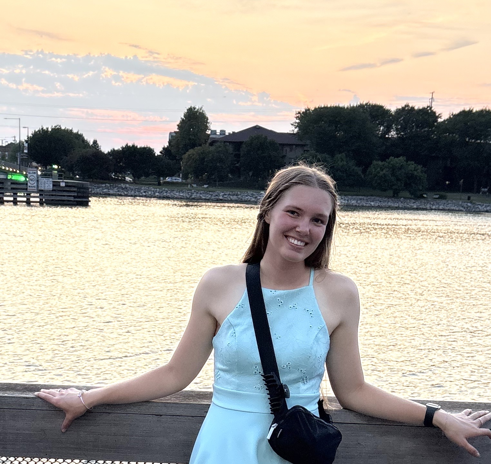
Alaina
Co-President
Super excited to serve UAS and build a community in astronomy!
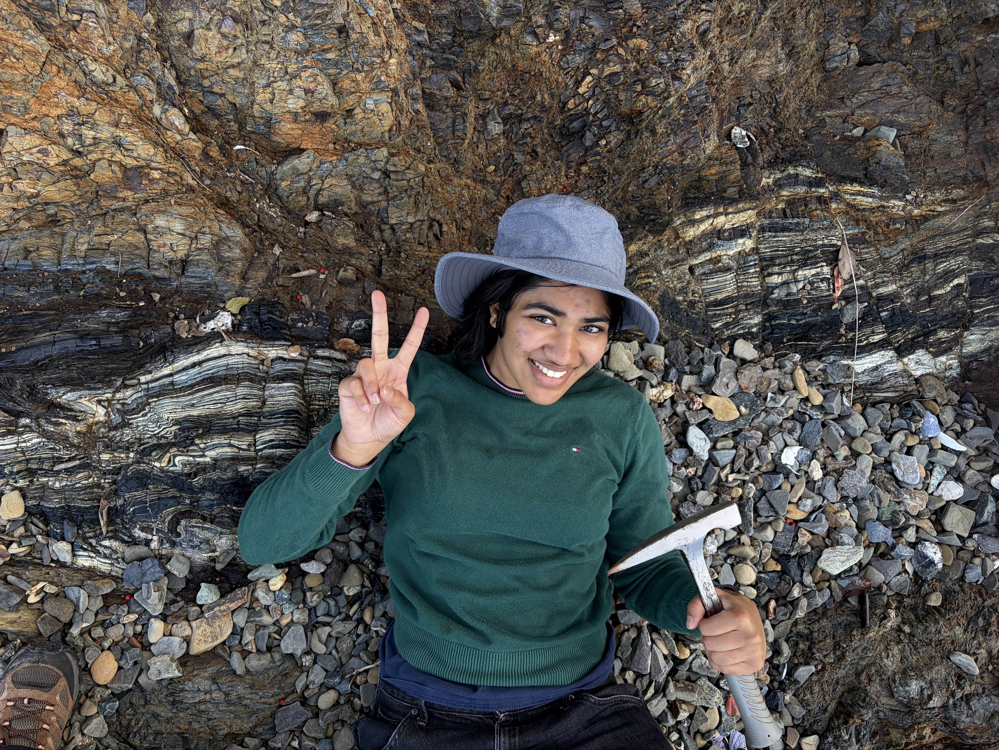
Shrey
Co-President
I’m excited to be one of UAS’s presidents this year! I love hiking, working out, sewing, and DJing. Talk to me about rocks and music!
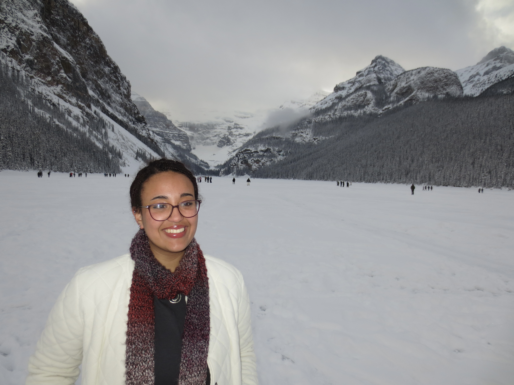
Milana
Community Development
I’m so excited to run the Cluster Mentorship Program this year! I’m interested in everything big and beautiful in space. Outside of UAS and academics, I like to write, read, crochet, bake with my friends, listen to and play music (all kinds), and hike.
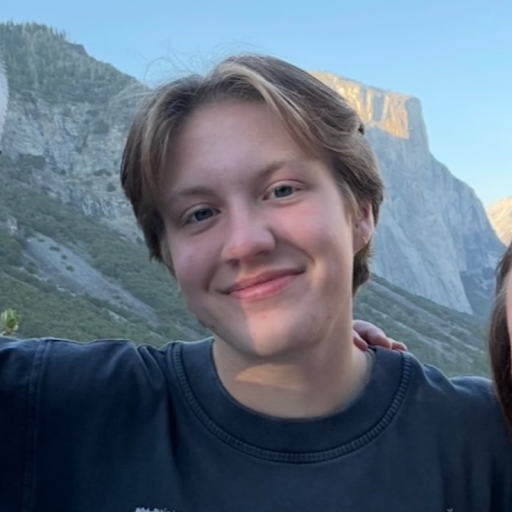
Sam
Marketing
Hello! I’m excited to serve as your Marketing Officer this academic year! I love UAS and the community we build here at Berkeley. When I’m not doing homework, I like to run/workout, play board and video games, and watch movies. Plus I pretty much listen to music at all times.
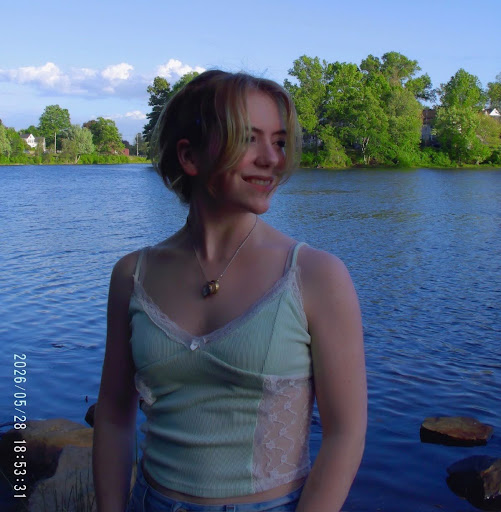
Zeke
Media
I’ve been involved with UAS since my very first month at Berkeley and am so excited to be part of the executive team now! I run all our media communications, namely Instagram and Discord announcements. I make all the art on our page (starting Fall 2026!) myself. My areas of interest are cosmology and black holes, but outside of academics, I love weightlifting, reading, and playing video games.
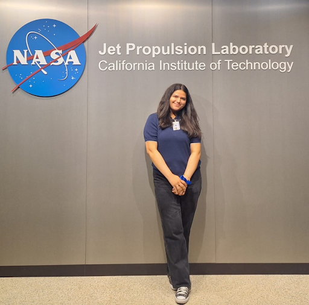
Shireen
Professional Development
I’m excited to serve as your Professional Development officer for UAS! I’ve been a space nerd since third grade and love all things exoplanets, aerospace, and satellite systems. Outside the classroom, you can usually find me hiking, traveling, or keeping up with F1. Feel free to reach out anytime to chat about research, internships, or navigating career paths in astro and engineering!

Thanael
Treasurer
Hello! My name is Thanael and I’m your UAS Treasurer! Outside of school I love video games (Marvel Rivals right now), piano, kyokushin karate, writing, and basketball. I’m also a huge Star Wars and Lord of the Rings nerd and am always happy to talk about either!
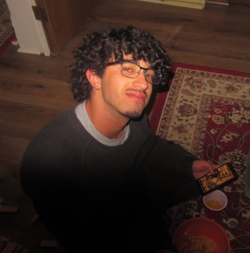
Michael
External Outreach
Hi! I’m the external outreach officer for UAS! I handle all things externally outside of Berkeley when it comes to programs, gatherings, or opportunities. I’m also an RA at Unit 2 Wada, as well as a teacher for the Telescope DeCal at Berkeley. Reach out to me through email at: Michael.Oliver@berkeley.edu for any questions, comments, or concerns.
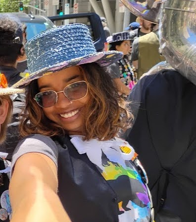
Gargi
Internal Outreach
Hey!
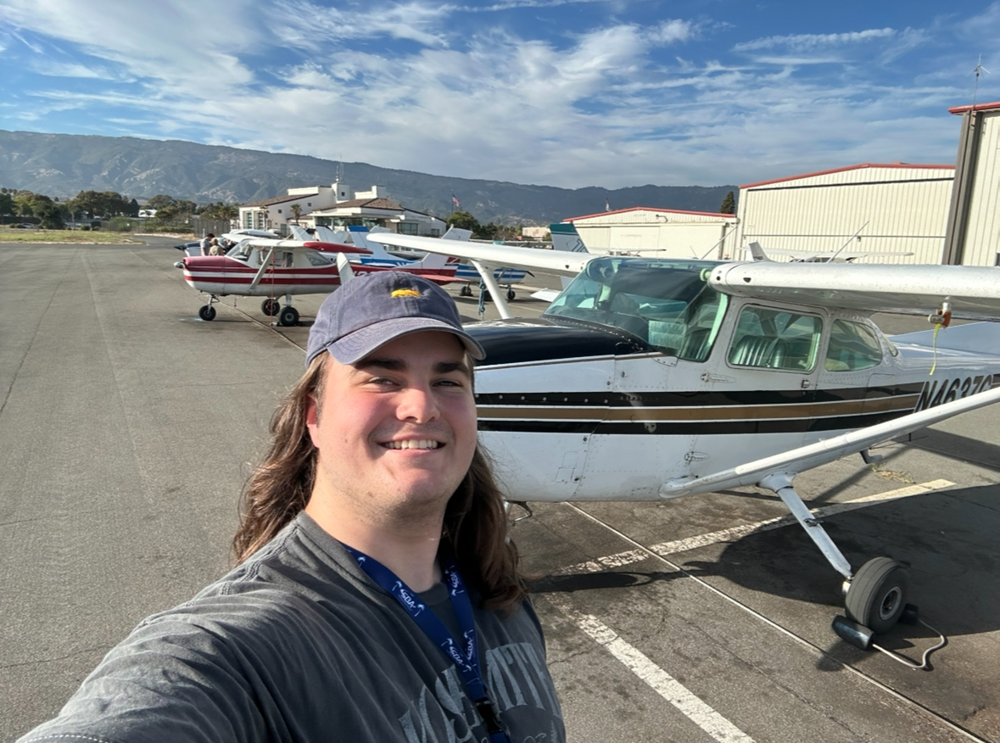
Riley
Head Telescope
I organize the telescope things! Outside of UAS, I still love to do telescope things! I also lift weights, play video games, and spend too much time on the 5th floor of Campbell. Come talk to me about anything you’re interested in!

Mariam
Telescope
Hello! I’m Mariam and I am one of your telescope officers. I love looking up at the sky and anything to do with planets (my favorite Solar System object is Io). Outside of space, I enjoy nature, puzzles, reading, and baking.
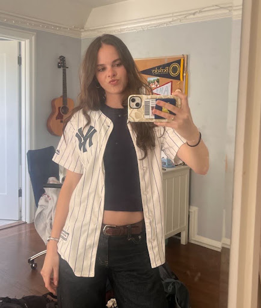
Annika
Telescope
I am a telescope officer, which means I train telescope crew and help out during star parties and sidewalk astronomy. I love art, rogue-likes/lites, and playing basketball and volleyball. I am also one of the Omega Centauri Cluster Heads, so talk to me if you're interested in cosmology or being in our cluster!
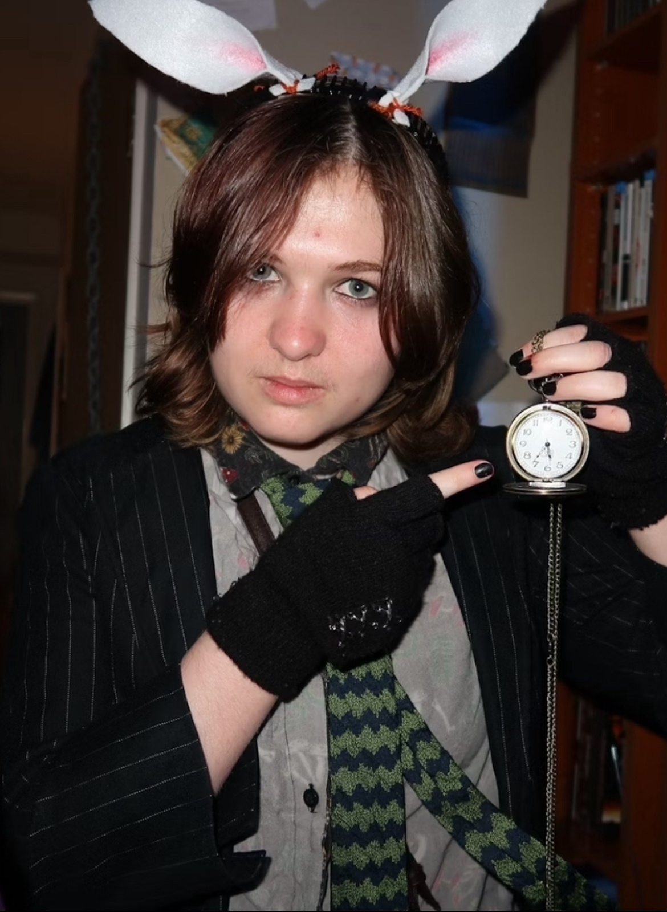
Shep
Telescope
Hi! I’m one of the telescope officers. Outside of astronomy, I’m a guitarist, a filmmaker, and a digital artist. I also love going to punk shows and creative writing :3

Arianna
Telescope
Hello! I’m one of the telescope officers. I enjoy listening to music, traveling, watching movies, and walking around campus at night (so many good hidden spots).
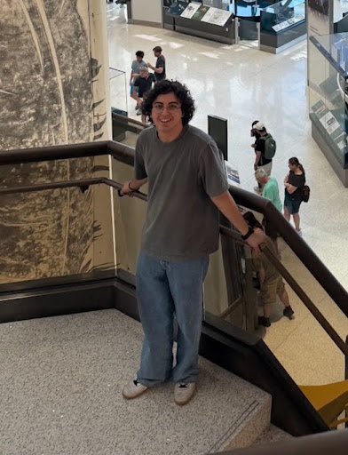
Eric
Telescope
Hello! I’m one of the telescope officers.